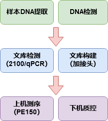
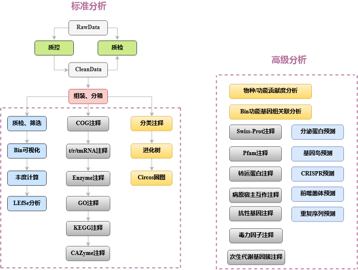

微生太_宏基因组分箱_结题报告
一、介绍
宏基因组分箱（Binning）是将宏基因组测序得到的混合了不同微生物的序列reads或序列组装得到的contigs或scaffolds按物种分开归类的过程。这些分开归类的序列被称为宏基因组组装基因组（metagenome-assembled genomes，MAGs)。传统的单物种全基因组序列都是经纯培养之后，再进行全基因组de novo测序才获得的，但是环境中存在着大量的不可培养微生物（uncultured candidate bacterial species，未培养候选菌种），而宏基因组分箱及相关技术不仅有助于获得不可培养微生物的基因组序列，还有以下诸多功能：（1）发现新物种，预测新物种基因，利用现有数据库分析新物种的功能；（2）扩充微生物基因组数据库，增加微生物多样性，提高宏基因组数据reads mapping率（检出率）；（3）有助于宏基因组技术开发；（4）助力“感兴趣”微生物群结构和功能的研究；（5）为菌群的分类和功能描述提供了更多的解决方案。早在2011年，science上的一篇文章就用了宏基因组Binning技术对来自牛瘤胃的样本进行了宏基因组测序研究。该研究从268 Gbp的宏基因数据中成功Binning出了15个不能培养的微生物的全基因组序列[1]。
从那以后，宏基因组Binning技术开始被更多的人关注和重视，也逐渐出现了很多宏基因组Binning相关的工具。Metabat是近几年所有分箱工具中最受欢迎的工具（引用达460+）。2019年发表在PeerJ上的新版Metabat2更是在完成度、效率等多方面均优于Metabat和同类工具 [2-3]。仅在2019年当年Metabat2就已经被Cell、Nature Biotechnology、Genome Biology等多篇高水平期刊引用 [4-6]。因此微生太从众多分箱工具中选择Metabat2进行分箱。不仅如此，微生太宏基因组分箱分析流程种使用的每一个软件都是根据效率、准确度等多个参数从众多同类软件中精挑出来的，例如序列组装工具Megahit，Bin质检工具Checkm，功能取预测工具Prokka，蛋白比对工具Diamond等等。
二、流程
2.1 实验流程

2.2 分析流程

2.3 分析流程简介
（1）数据质控：
测序得到的原始数据会存在一定比例的低质量数据，为了保证后续信息分析结果的准确可靠，首先要对原始数据进行质控及宿主过滤，得到有效数据[7]。分析中将使用Kneaddata软件彻底清除原始数据中的Illumina接头序列、低质量的序列片段和较短序列。质控前和质控后，会用FastQC来检测质控的合理性和效果。
（2）去除宿主：
质控处理后的数据通过Bowtie2软件[9]比对到宿主的基因组，没有比对到的序列被保留下来做后续分析。
（3）分箱：
运用Megahit软件，将所有样本去宿主基因后的clean reads进行组装（megahit默认组装参数），得到contigs；运用Bowtie2进行建索引和序列比对获得clean reads在contigs中的比对信息；用Samtools软件[10]对比对结果进行格式转换和排序；用Metabat2自带的jgi_summarize_bam_contig_depths程序计算contig深度，然后用Metabat2进行分箱，最小contig长度设为1500。
（4）Bin质检：
使用Checkm软件[11]中的lineage_wf功能对分箱结果进行质量检查，获得每个箱子的完成度、污染度、物种分类等信息。筛选完成度大于70%，同时污染度小于10%的Bin用于后续分析。
（5）Bin可视化和丰度分析：
首先计算每个Bin中每条序列的GC含量，结合分箱过程中得到的contig depth数据进行Bin可视化，根据contig的GC含量和depth信息绘制二维散点图；在Metawrap环境中，使用Metawrap的quant_bins模块(Salmon算法)计算每个Bin的丰度。如果每组样品数大于等于3，接着用lefse进行差异丰度分析寻找组间差异Bin。
（6）Bin功能注释：
使用Prokka软件[13]对每个Bin进行功能注释，获得每个Bin中的rRNA、tRNA、tmRNA、基因、直系同源蛋白簇（COG）、EC注释信息。使用Kofamscan进行KEGG功能注释。使用eggnog-mapper进行GO注释。使用Diamond软件[15]和CAZy数据库对每个Bin进行碳水化合物酶注释，获取每个Bin中的碳水化合物酶信息。
（7）Bin进化分析：
基于Prokka的基因预测结果，使用Phylophlan软件[14]不仅可以分析Bin质检的进化关系，还可以分析Bin与已知微生物之间的进化关系。
（8）Bin圈图分析：
利用每个Bin（基于contig）的Prokka蛋白预测信息，功能区注释信息（含正负链、CDS、RNA类型等信息），CAZy数据库注释结果（GH、GT、CE、PL、CBM、AA），以及GC content、GC skew的统计结果绘制Circos圈图，直观展示整个Bin的功能注释信息。
三、结果
00-Raw数据质检
原始数据序列统计表
01-Clean数据质检
Clean数据序列统计表
02-Bin和Bin质检
使用Megahit组装混合到一起的Clean测序数据，得到contigs。分别用Bowtie2和Samtools进行比对和格式转换。得到conitgs深度数据后，使用Metabat2进行宏基因组分箱。设置Metabat2参数“-m 1500”，即使用1500bp以上的conitgs进行分箱。使用Checkm对每个Bin进行质量检查，获得原始Bin的完成度和污染度信息。
完成度>=70%且污染度<=10%的Bin
03-Bin可视化
利用可视化的方法直观展示Bin的由来和所含信息。宏基因组分箱的原理是根据序列（contig/scaffold）四核苷酸频率和序列丰度变化模式将序列分成一个个Bin。每个Bin的每个contig都会在此处理（metabat2分箱）的过程中有一个depth深度数据。另外我们利用自己的python脚本计算每个Bin的contig GC含量。有了contig GC含量和depth数据即可进行Bin可视化，绘制每个Bin中每个contig的散点图。MetaWrap中的blobology模块通过bin、contig、样品fastq三组序列数据进行megablast比对等工作也能够进行Bin可视化，但是这种方法非常耗费计算机运行时间。相较之下我们的方法效率非常高，省去大量的多余工作。
Binned contigs可视化
04-Bin丰度分析
首先，用metawrap中的quant_bins模块（salmon算法），估计每个样品中每个scaffold的丰度，计算Bin平均丰度，获得样品-Bin丰度表。Bin丰度是“每百万序列基因组拷贝数”，是已经标准化的数据，类似RNAseq分析中的TPM（每百万转录本）。接着，用R语言pheatmap绘图函数绘制样品-Bin丰度热图。热图可以以色块颜色深浅的方式表达Bin丰度的大小，还可以进行Bin-Bin聚类和样品-样品聚类，相似的丰度模式会被聚到一起。然后，统计每个Bin的丰度总数，用ggplot geom_bar绘制柱形图并排序，展示整批数据中所有Bin的丰度情况。如果客户提供的样品分组>=2且每组样品在三个以上，那么还可以用lefse进行组间差异分析寻找与分组有关的Bin。
Bin丰度热图（各个样品）
Bin丰度柱状图（合并样品）
Bin丰度lefse分析结果图
05-Bin功能注释：COG、EC、RNA
COG，即Clusters of Orthologous Groups of proteins（同源蛋白簇），COG注释信息[官网]。COG是由NCBI创建并维护的蛋白数据库，根据细菌、藻类和真核生物完整基因组的编码蛋白系统进化关系分类构建而成。COG分为两类，一类是原核生物的（一般称COG），另一类是真核生物（一般称KOG）。通过比对可以将某个蛋白序列注释到某一个COG中，每一簇COG由直系同源序列构成，从而可以推测该序列的功能。ENZYME收录了7大类酶的四级分类信息，EC注释信息[官网]。EC编号或EC号是酶学委员会（Enzyme Commission）为酶所制作的一套编号分类法，每一个酶的编号都以字母“EC”起头，接着以四个号码来表示，这些号码代表逐步更细致的为酶作出分类。就如三肽胺基 蛋白酶的编号为EC3.4.11.4，当中的“EC3”是指水解酶（即以水来将分子分解的酶）；“EC3.4”是那些与肽键产生作用的水解酶；“EC3.4.11”是单指那些从多胜肽中分开胺基末端的水解酶；“EC3.4.11.4”则是从三肽中分开胺基末端的水解酶。
Bin功能注释统计
COG数据库分类注释统计图
| Function | COG level_1 | COG level_2 |
|---|---|---|
| J | INFORMATION STORAGE AND PROCESSING | Translation, ribosomal structure and biogenesis |
| A | INFORMATION STORAGE AND PROCESSING | RNA processing and modification |
| K | INFORMATION STORAGE AND PROCESSING | Transcription |
| L | INFORMATION STORAGE AND PROCESSING | Replication, recombination and repair |
| B | INFORMATION STORAGE AND PROCESSING | Chromatin structure and dynamics |
| D | CELLULAR PROCESSES AND SIGNALING | Cell cycle control, cell division, chromosome partitioning |
| Y | CELLULAR PROCESSES AND SIGNALING | Nuclear structure |
| V | CELLULAR PROCESSES AND SIGNALING | Defense mechanisms |
| T | CELLULAR PROCESSES AND SIGNALING | Signal transduction mechanisms |
| M | CELLULAR PROCESSES AND SIGNALING | Cell wall/membrane/envelope biogenesis |
| N | CELLULAR PROCESSES AND SIGNALING | Cell motility |
| Z | CELLULAR PROCESSES AND SIGNALING | Cytoskeleton |
| W | CELLULAR PROCESSES AND SIGNALING | Extracellular structures |
| U | CELLULAR PROCESSES AND SIGNALING | Intracellular trafficking, secretion, and vesicular transport |
| O | CELLULAR PROCESSES AND SIGNALING | Posttranslational modification, protein turnover, chaperones |
| X | CELLULAR PROCESSES AND SIGNALING | Mobilome: prophages, transposons |
| C | METABOLISM | Energy production and conversion |
| G | METABOLISM | Carbohydrate transport and metabolism |
| E | METABOLISM | Amino acid transport and metabolism |
| F | METABOLISM | Nucleotide transport and metabolism |
| H | METABOLISM | Coenzyme transport and metabolism |
| I | METABOLISM | Lipid transport and metabolism |
| P | METABOLISM | Inorganic ion transport and metabolism |
| Q | METABOLISM | Secondary metabolites biosynthesis, transport and catabolism |
| R | POORLY CHARACTERIZED | General function prediction only |
| S | POORLY CHARACTERIZED | Function unknown |
06-Bin_KEGG数据库注释
KEGG数据库于 1995 年由 Kanehisa Laboratories 推出 0.1 版，目前发展为一个综合性数据库，其中最核心的为 KEGG PATHWAY 和 KEGG ORTHOLOGY 数据库。在 KEGG ORTHOLOGY 数据库中，将行使相同功能的基因聚在一起，称为 Ortholog Groups (KO entries)，每个 KO 包含多个基因信息，并在一至多个 pathway 中发挥作用。而在 KEGG PATHWAY 数据库中，将生物代谢通路划分为 6 类，分别为：细胞过程（Cellular Processes）、环境信息处理（Environmental Information Processing）、遗传信息处理（Genetic Information Processing）、人类疾病（Human Diseases）、新陈代谢（Metabolism）、生物体系统（Organismal Systems），其中每类又被系统分类为二、三、四层。第二层目前包括有 57个种子 pathway；第三层即为其代谢通路图；第四层为每个代谢通路图的具体注释信息。
使用KEGG注释软件KofamScan和KOfam数据库对prokka预测基因的蛋白序列进行KEGG注释。接着利用KEGG提供的注释文件获得每个K_ID的生物学名称（*_kegg_annotation.txt文件），以及每个K_ID所属通路的信息（*_kegg_pathway_num_annotation.txt文件）。最后对通路注释统计结果进行可视化。
KEGG pathway level2数量可视化
KEGG pathway图
07-Bin_GO数据库注释
GO数据库是基因本体联合会(Gene Onotology Consortium)所建立的数据库，旨在建立一个适用于各种物种的，对基因和蛋白质功能进行限定和描述的，并能随着研究不断深入而更新的语言词汇标准。GO是多种生物本体语言中的一种，是OBO（Open BiomedicalOntologies）组织中的一员，GO提供了一系列的语义（terms）用于描绘基因、基因产物的特点，这些语义通过三个概念维度展开：细胞学组件（Cellular Component）用于描述某个节点的亚细胞结构、位置和大分子复合物，如外部封装结构（external encapsulating structure）等；分子功能（molecular function），用于描述基因以及基因产物的功能，比如蛋白质结合转录因子活性（protein binding transcription factor activity）；生物学途径（biological process）指的是分子功能的有序组合以实现更复杂的生物功能，例如树突状细胞的抗原处理和提呈（dendritic cell antigen processing and presentation）。
使用eggnog-mapper功能注释软件和eggNOG数据库进行GO注释。该方法除了获得GO的注释信息还能获得KEGG、COG等信息。获得GO结果后统计注释到每个GO中的基因数量，然后进一步注释获得GO的category分类信息和GO term（*_go_annotation.txt文件）。最后通过R语言对该数据进行柱形图绘制。
GO注释统计图
08-Bin_CAZyme数据库注释
碳水化合物酶（CAZy）数据库是关于能够合成或者分解复杂碳水化合物和糖复合物的酶类的数据库。CAZy数据库基于蛋白质结构域中的氨基酸序列相似性将碳水化合物活性酶类归入不同蛋白质家族。CAZy数据库提供了酶分子序列的家族信息，物种来源，基因序列，蛋白序列，三维结构，EC分类，相关数据库链接。此数据库可以将酶分子的序列、结构、催化机制关联起来。CAZy有三个level，第一个level是六大功能类，即GH GT AA CE PL CBM；第二个level是CAZy family；第三个是有EC编号的具体酶信息，如EC2.4.1.129。
利用蛋白比对工具diamond将prokka预测得到的所有功能区与CAZy数据库进行比对可获取基因组CAZyme family注释信息。
8.1 CAZyme level one分析结果
（1）箱图分析
level one CAZyme数量统计箱图
（2）热图分析
level one CAZyme数量统计热图
（3）堆叠图分析
level one CAZyme数量统计堆叠图
（4）饼图分析
level one CAZyme数量统计饼图
8.2 CAZyme level two分析结果
level two CAZyme数量统计饼图
09-Bin进化分析
9.1 分类学注释
PhyloPhlAn是发表在Nature Communications上的一个用于分析微生物之间进化关系的软件。PhyloPhlAn能通过分析400种通用微生物蛋白展示微生物之间的进化关系。软件本身自带3000+种已知微生物的进化关系信息，因此PhyloPhlAn也常用于研究新发现的微生物与已知微生物进化关系
利用PhyloPhlAn可以获得每个Bin的系统发生信息。内容如下表，其中部分Bin可以精确到物种水平，也就是说这些Bin是已知微生物，而很多Bin无法精确注释到物种水平，这可能是因为Bin不够完整，或是因为这些Bin是未知物种。
Bin物种分类信息表
9.2 进化分析
使用PhyloPhlAn可以给物种或者Bin进行De novo进化关系分析，利用基因组数据分析某些物种或者Bin之间的进化关系。下图是Bin之间的进化关系树状图。树状图由R语言ggplot2和ggtree绘制。
Bin之间的进化关系树状图
10-Bin_Circos圈图
Circos是由加拿大生物信息学科学家Martin Krzywinski利用Perl语言开发的一款可以用于描述关系型数据和多维数据的基因组圈图可视化软件。2009年Circos发表在Genome research。Circos不仅能将一个物种的整个基因组呈现在一张图片中，还可以给基因组添加丰富的注释信息，如功能注释信息，差异统计信息等等。
利用每个Bin（基于contig）的Prokka蛋白预测信息，功能区注释信息（含正负链、CDS、RNA类型等信息），CAZy数据库注释结果（GH、GT、CE、PL、CBM、AA），以及GC content、GC skew的统计结果绘制Circos圈图。
Bin基因组圈图
从外到内
四、常见问题
1. 为什么大多数Bin注释不到种水平？
2. 宏基因组分析得到的优势菌为何无法binning？
五、参考文献
六、联系我们
地址：广东省深圳市南山区留仙大道1201号大学城创客小镇
邮编：518055